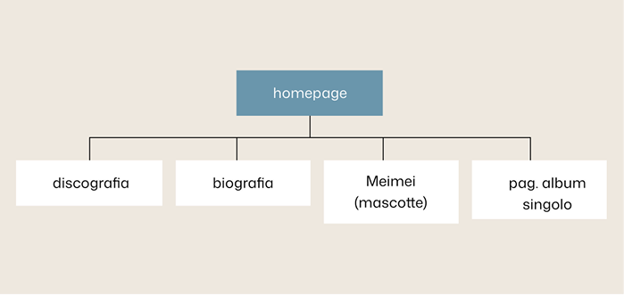
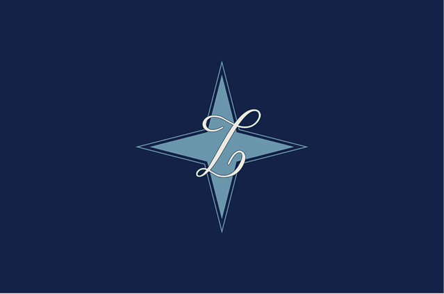
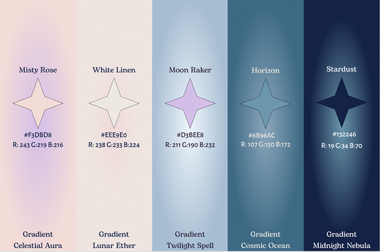

Delfanti Laura - esame html - 2026
Laufey. Dare forma a un suono di altri tempi.
Portare la musica classica e il jazz nel cuore delle nuove generazioni con un linguaggio visivo ed emotivo unico.

CONCEPT
Presentazione del progetto
Il progetto nasce con l’obiettivo di tradurre l’universo artistico di Laufey in un’esperienza digitale immersiva, capace di bilanciare la freschezza della sua proposta musicale con l'eleganza senza tempo del jazz e della musica classica.
Scopo
Creare un'esperienza digitale curata nei minimi dettagli per raccontare i pilastri dell’artista, guidando l'utente alla scoperta della sua musica, dei suoi progetti e del suo immaginario attraverso un layout chiaro e raffinato.
Il design non si limita a mostrare la musica, ma ne costruisce l'universo visivo e simbolico.
Concetto
Unire l'eleganza del jazz e della musica classica a storie intime e contemporanee.
Esperienza
Creare spazi d'ascolto e mondi visivi immersivi per i fan di tutto il mondo.
Suono e forme
Dare forma tangibile alla musica attraverso vinili, libri illustrati e iniziative no-profit.
Una pagina per ogni sezione
Homepage, pagina discografia, pagina biografia, pagina della mascotte MeiMei e pagina album singolo.
Dall'insieme al dettaglio
Ogni pagina del sito web è mirata per spiegare al meglio il mondo dell'artista.
Apri il progetto su Figma ›
Elementi del progetto
Il logo e la palette colori sono stati progettati su misura per riflettere l'estetica sofisticata dell'artista e dare coerenza all'intero sistema visivo.
Il logo
Il simbolo nasce dall'unione tra una stella a quattro punte e l'elegante "L" in corsivo, unendo la cifra identitaria dell'artista a un'estetica celeste. Un segno grafico sognante pensato per racchiudere in un unico elemento l'universo narrativo e l'armonia del brand.

La palette colori
Dai toni tenui di Moon Raker alle gradazioni scure di Horizon, la palette unisce contrasto e morbidezza. La trama e le sfumature richiamano il simbolo e la struttura biologica, definendo il linguaggio visivo del progetto in modo unico.

Rendere visibili relazioni e scelte
Approfondimenti su scelte prese per il progetto
Materiali e metodo
Che cosa comprende la reinterpretazione?
Attraverso la selezione dei contenuti chiave del sito ufficiale di Laufey, l'interfaccia è stata rielaborata in un sito-documentario che ne evidenzia i pilastri e l'universo artistico.
Fonti primarie
Anche questa pagina è un progetto.
Per raccontare Laufey ho progettato una seconda interfaccia: questo case study. Ho studiato Primer Brand e combinato i suoi componenti per dare una forma coerente al racconto.
-
Sono partito dalla documentazione e dalle pagine GitHub: tipografia, colori, spazi e comportamenti formano un insieme di decisioni. Ho usato Primer Brand come vocabolario per costruire la mia pagina.
Esplora Primer Brand -
Ho selezionato gli elaborati e dato a ogni contenuto una forma: Pillar per i livelli di lettura, Tabs per le viste, Testimonial per una riflessione. Gerarchie e spazi collegano i capitoli; sul mobile la composizione cambia disposizione.
Rileggi le scelte nella pagina -
Il lavoro continua nel browser: controllo la leggibilità, i collegamenti e i controlli da tastiera a larghezze diverse. La prova pratica richiede anche di saper spiegare e modificare il codice, mantenere Figma e sito coerenti e pubblicare il lavoro con GitHub Pages.
Scopri GitHub Pages